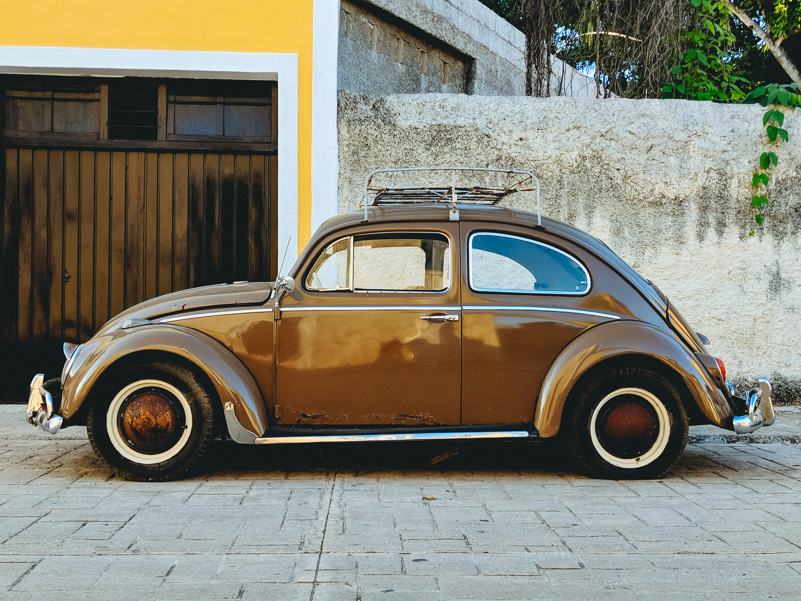

자동차
- Benz
- Audi
- BMW
자동차

자동차(自動車, 영어: car)는 자체 엔진에서 만든 동력을 바퀴에 전달하여 지상에서 승객이나 화물을 운반하는 교통 수단이다.
자동차를 뜻하는 영어 단어인 'car'는 라틴어 'carrus' 혹은 'carrum'에서 왔고, 미국 영어 단어인 'automobile'은 그리스
어 'autos'와 라틴어 'movere'에서 왔다. 즉, '스스로 움직인다'는 뜻을 가지고 있다. 한국에는 1911년에 대한제국 순종의
전용차와 조선총독부의 관용으로 처음 들어왔다1886년 최초로 내연자동차가 등장한 이래 1900년 초까지 자동차는 가내수공업
으로 만들어졌다. 일명 ‘엔진 실은 마차’로 여겨졌다. 거기에 지붕을 덮고 문을 달았다. 근대적 형태의 자동차 형태를 갖추게
된 것이다. 그렇지만 당시의 자동차는 결정적인 기능적 결함이 있었다. 전진만 가능한 이동 수단이었다. 운전수와 함께 조수가
탑승해야 했다. 주차나 후진을 위해서 차를 밀어야 할 인력이 필요했기 때문이다. 이 문제는 1911년에 카레이서인 레이 하룬
이 자동차에 후사경을 달면서 해결의 실마리를 찾게 됐다. 아내가 화장대 앞에서 뒷머리를 손질하는 데서 얻은 아이디어였다
. 이것이 자동차의 차별화의 시작이라고 해도 과언이 아니다. 수많은 가내 수공업 자동차 메이커들이 거울을 부착한 자동차에
브랜드 가치를 부여하기 위해 엠블럼을 달기 시작했다. 이 때까지만해도 자동차는 지주나 대상공인이 아니면 어느 누구도
가질 수 없는 귀중품이었다.